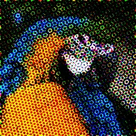

CMYK-rasterpunten

Tekent de laag opnieuw als tijdschriftdruk: cyaan, magenta, gele en zwarte punten op vier gedraaide rasters.
Instellingen
| Instelling | Type | Bereik | Standaard |
|---|---|---|---|
| Hoeveelheid | Getal | 0 tot 500 | 100 |
| Sterkte | Getal | 0 tot 1 | 0.5 |
| Zwart | Getal | 0% tot 100% | 0% |
| Hoek | Hoek | 0° tot 3600° | 45° |
| Fase | Getal | -1000 tot 1000 | 0.5 |
| Stijl | Keuze | Klassiek, Hard | Klassiek |